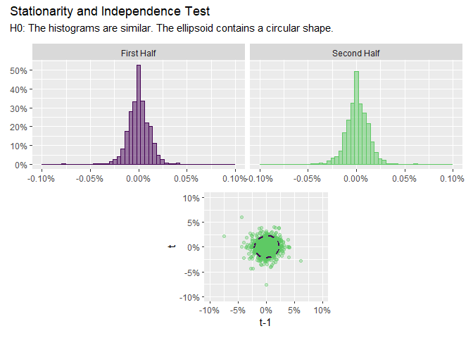
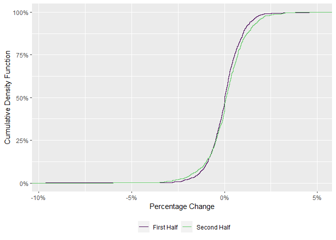

The goal of invariance is to help users to perform The Quest for Invariance, which is the first step in Meucci’s Checklist.
You can install the development version of invariance like so:
# install.packages("devtools")
devtools::install_github("Reckziegel/CMA")
library(invariance)
library(tibble)
x <- as_tibble(diff(log(EuStockMarkets)))
x
#> # A tibble: 1,859 x 4
#> DAX SMI CAC FTSE
#> <dbl> <dbl> <dbl> <dbl>
#> 1 -0.00933 0.00618 -0.0127 0.00677
#> 2 -0.00442 -0.00588 -0.0187 -0.00489
#> 3 0.00900 0.00327 -0.00578 0.00903
#> 4 -0.00178 0.00148 0.00874 0.00577
#> 5 -0.00468 -0.00893 -0.00512 -0.00723
#> 6 0.0124 0.00674 0.0117 0.00852
#> 7 0.00576 0.0122 0.0131 0.00821
#> 8 -0.00287 -0.00359 -0.00194 0.000837
#> 9 0.00635 0.0110 0.000171 -0.00523
#> 10 0.00118 0.00436 0.00313 0.0140
#> # ... with 1,849 more rowsDescribe the series with series_describe:
series_describe(x)
#> # A tibble: 4 x 13
#> asset observations na minimum quartile_1 median mean quartile_3 maximum
#> <chr> <dbl> <dbl> <dbl> <dbl> <dbl> <dbl> <dbl> <dbl>
#> 1 DAX 1859 0 -0.0963 -0.00469 4.73e-4 6.52e-4 0.00636 0.0508
#> 2 SMI 1859 0 -0.0838 -0.00380 8.86e-4 8.18e-4 0.00607 0.0497
#> 3 CAC 1859 0 -0.0758 -0.00606 0 4.37e-4 0.00710 0.0610
#> 4 FTSE 1859 0 -0.0414 -0.00432 8.02e-5 4.32e-4 0.00525 0.0544
#> # ... with 4 more variables: variance <dbl>, std <dbl>, skewness <dbl>,
#> # kurtosis <dbl>Check if a specific asset is stationary (invariant) with plot_ellipsoid:
plot_ellipsoid(x[ , 1]) # must be univariate
See if a distribution changes in time if ks_test:
ks_test(x[ , 1])
#>
#> Two-sample Kolmogorov-Smirnov test
#>
#> data: x and y
#> D = 0.067441, p-value = 0.02917
#> alternative hypothesis: two-sided